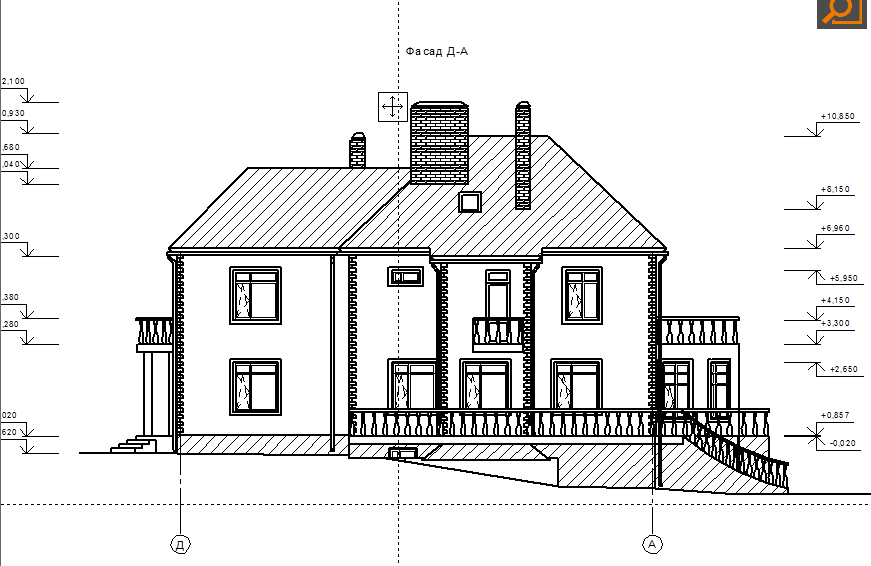

4
В архиве представлены проекты на строительство
(реконструкцию, капремонт) гражданских, и производственных объектов,
включая дома, линейные - инженерные сети и автомобильные дороги. В архиве имеются проекты на строительство двухэтажных коттеджей. Также здесь представлены проекты на капитальный ремонт лечебных, дошкольных учреждений и учреждений культуры, а также
справочная и нормативная документация, образцы писем и документов общим объемом более 50 Гбайт.
Представленные материалы могут быть полезны проектировщикам, строителям и студентам, а также всем заинтересованным лицам.Архивные материалы могут быть использованы в качестве аналогов при разработке проектов на строительство, проектов организации строительства и дипломных проектов.
АРХИВ_(1-й уровень)
АРХИВ_СПЕЦИАЛИСТОВ_(2-й уровень)
Аннотация проекта коттеджа (продолжение)

|
5
|
6
|